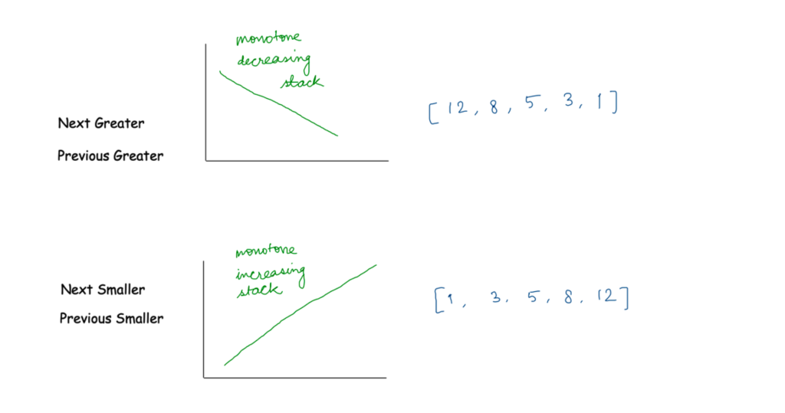
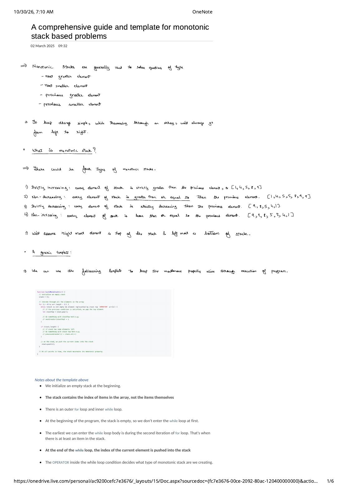
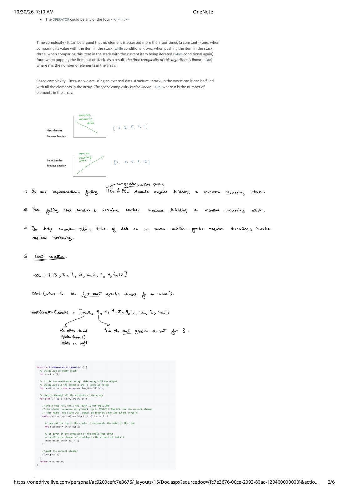

Part 1: The 4 Monotonic Stack Types, Generic Index-Stack Template & Amortized $\mathcal{O}(n)$ Proof
Expanded from MonotonicStack_01_A_comprehensive_guide_and_template.pdf (Pages 1–2) · View original handwritten pages
1. What Problems Does a Monotonic Stack Solve?
Monotonic stacks are purpose-built for problems that ask for the first (nearest) element to the right or left of each position $i$ that crosses a comparison threshold:
- Next Greater Element (NGE): First index $j > i$ with $\text{arr}[j] > \text{arr}[i]$.
- Next Smaller Element (NSE): First index $j > i$ with $\text{arr}[j] < \text{arr}[i]$.
- Previous Greater Element (PGE): Last index $j < i$ with $\text{arr}[j] > \text{arr}[i]$.
- Previous Smaller Element (PSE): Last index $j < i$ with $\text{arr}[j] < \text{arr}[i]$.
Standing Orientation Convention
Some tutorials reverse loop directions (scanning right-to-left for Next queries and left-to-right for Previous queries), which forces you to memorize two separate mental models. To keep everything clean and unified:
- Always scan the array from left to right ($i = 0 \to n - 1$).
- When writing a stack horizontally as a list
[a, b, c], the leftmost element is the bottom of the stack and the rightmost element is the top of the stack.
2. The Four Variants of a Monotonic Stack
A stack is monotonic if the values from bottom (left) to top (right) preserve a single ordering invariant at every point in time. Depending on whether we forbid or allow adjacent equal values, there are exactly four types of monotonic stacks:
| Type | Name | Adjacent Pair Invariant ($a$ below $b$) | Example Stack (Bottom $\to$ Top) |
|---|---|---|---|
| Type 1 | Strictly Increasing | Every element is strictly greater than the previous ($a < b$) | [1, 4, 5, 8, 9] |
| Type 2 | Non-Decreasing (Increasing, equal allowed) | Every element is greater than or equal to the previous ($a \le b$) | [1, 4, 5, 5, 8, 9, 9] |
| Type 3 | Strictly Decreasing | Every element is strictly smaller than the previous ($a > b$) | [9, 8, 5, 4, 1] |
| Type 4 | Non-Increasing (Decreasing, equal allowed) | Every element is smaller than or equal to the previous ($a \ge b$) | [9, 9, 8, 5, 5, 4, 1] |
As we will prove in Part 3, distinguishing Type 1 vs. Type 2 and Type 3 vs. Type 4 is not pedantic math—it is the exact difference between passing and failing duplicate-element test cases like arr = [2, 2]!
3. The Universal Monotonic Stack Template
How do we keep the monotonic invariant alive as arbitrary numbers arrive from the array? Before pushing the incoming index $i$, we run a while loop that evicts (pops) every element at the top of the stack that would violate our chosen monotonic order if $\text{arr}[i]$ were placed on top of it.
// Universal Left-to-Right Monotonic Stack Template (C++)
void buildMonoStack(const vector<int>& arr) {
int n = arr.size();
stack<int> st; // Stores INDICES of arr, never raw values!
for (int i = 0; i < n; ++i) {
// OPERATOR is one of: < , <= , > , >=
while (!st.empty() && (arr[st.top()] /* OPERATOR */ arr[i])) {
int stackTop = st.top();
st.pop();
// [1] INSIDE WHILE LOOP:
// arr[i] caused stackTop to be popped!
// Resolve "NEXT" boundary for stackTop here, e.g.:
// nextGreater[stackTop] = i;
}
if (!st.empty()) {
// [2] OUTSIDE WHILE LOOP:
// Everything violating monotonicity with arr[i] is gone.
// Resolve "PREVIOUS" boundary for current index i here, e.g.:
// previousGreater[i] = st.top();
}
// Finally, push the current index onto the stack.
// Invariant: at the end of every iteration, st is monotonic!
st.push(i);
}
}Seven Essential Anatomy Notes on the Template
- Empty initialization: We start with an empty stack
stbefore scanning index $0$. - Store indices, not values: Pushing index $i$ strictly dominates pushing $\text{arr}[i]$. Given an index
idx, you get the value in $\mathcal{O}(1)$ viaarr[idx], and you get exact positional spans such asi - idx(essential for Daily Temperatures, Stock Span, Largest Rectangle in Histogram, and Trapping Rain Water). - Outer
for+ innerwhilestructure: Despite the nested loops, total runtime is strictly linear (proved below). - First iteration skips the
whileloop: At $i = 0$, the stack is empty, so!st.empty()is false and index $0$ is pushed directly. - Earliest
whileentry is $i = 1$: Only starting at the second iteration ($i = 1$) is there at least one element on the stack to compare against. - Unconditional push at the end: Every index $i \in \{0, \dots, n-1\}$ is pushed onto the stack exactly once at the bottom of the
forloop. OPERATORcontrols the stack type: ReplacingOPERATORwith<,<=,>, or>=selects which of the 4 monotonic stack invariants survives after thewhileloop:- Pop while
top < cur$\implies$ survivors satisfytop >= cur$\implies$ Type 4: Non-Increasing (decreasing, equal allowed). - Pop while
top <= cur$\implies$ survivors satisfytop > cur$\implies$ Type 3: Strictly Decreasing. - Pop while
top > cur$\implies$ survivors satisfytop <= cur$\implies$ Type 2: Non-Decreasing (increasing, equal allowed). - Pop while
top >= cur$\implies$ survivors satisfytop < cur$\implies$ Type 1: Strictly Increasing.
- Pop while
4. Why Nested Loops Run in $\mathcal{O}(n)$ Time: The 4-Access Lifecycle Proof
A common interview follow-up is: "There is a while loop inside a for loop, and a single iteration can pop $n - 1$ elements. Why isn't the time complexity $\mathcal{O}(n^2)$?"
Amortized $\mathcal{O}(n)$ Time & $\mathcal{O}(n)$ Space Proof
Instead of multiplying max inner iterations by $n$, track the lifetime of a single array element $\text{arr}[k]$. Across the entire execution of the algorithm, element $k$ is touched at most 4 times (a constant):
- Access 1 (Incoming comparison): When $i = k$, comparing $\text{arr}[k]$ against the surviving stack top in the final
whilecheck that evaluates tofalse. - Access 2 (Push): Pushing index $k$ onto the stack via
stack.push(k)(happens at most once). - Access 3 (Stack-top comparison): Later at some $i > k$ when $k$ sits at
stack.top(), comparing $\text{arr}[k]$ against $\text{arr}[i]$ in thewhilecondition. (Note: any failed comparison where $k$ is not popped already terminated that $i$'swhileloop, so we already charged it as Access 1 of index $i$!) - Access 4 (Pop): Popping index $k$ out of the stack via
stack.pop()(happens at most once; once popped, $k$ never re-enters the stack).
Space Complexity: Because we maintain an external stack that in the worst case holds all $n$ indices simultaneously (for example, [13, 10, 8, 5, 1] when searching for Next Greater Elements), worst-case auxiliary space is $\mathcal{O}(n)$.
5. Which Stack Do We Build? The Inverse Relation Rule
How do you instantly recall whether to build an increasing stack or a decreasing stack without guessing?

The Inverse Relation Mnemonic
- Greater Queries (NGE & PGE) $\longrightarrow$ Monotone Decreasing Stack (e.g.,
[12, 8, 5, 3, 1]):
Why? While elements descend ($12 \to 8 \to 5 \to 3 \to 1$), none of them has encountered a greater element to its right yet, so all of them must wait on the stack. Meanwhile, if the next number is $4$, $5$ is its Previous Greater Element—and once a bigger number like $9$ arrives, $9$ resolves the Next Greater Element for $1, 3, 5, 8$ and completely blocks $1, 3, 5, 8$ from ever being the nearest Previous Greater Element for anything to the right of $9$! - Smaller Queries (NSE & PSE) $\longrightarrow$ Monotone Increasing Stack (e.g.,
[1, 3, 5, 8, 12]):
By exact mirror symmetry, elements ascend while waiting for a smaller element to arrive and pop them.
Memory Hook: Think of it as an inverse relation — Greater requires Decreasing; Smaller requires Increasing.
From the Handwritten Notes
Open the original handwritten scans for Pages 1 and 2 below to compare directly with the definitions, template notes, and complexity proof above:
View original page 1 — Problem types, the 4 monotonic stack invariants & generic template


View original page 2 — O(n) complexity argument, inverse relation diagram & Next Greater setup

